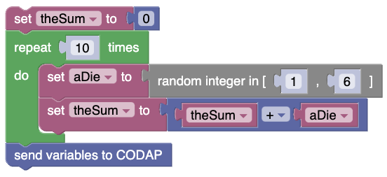
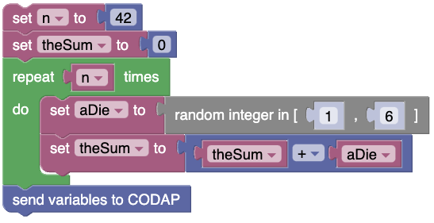
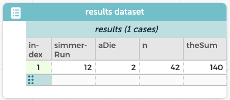

Simmer Guide
\(n\) dice
You’ve just done 10 dice using this program:

Clearly, you could add any number of dice by changing the number 10 in that loop block. Here is a different way to do this:

The difference is, instead of a number in the loop (“repeat 10 times”) we have a variable (“repeat \(n\) times”). Make sure you understand why this program will roll 42 dice and add the results.
A single run looks like this; your results will vary:

Why would you want to write it this way?
- If you want to change how many dice get rolled, you can change the number up at the top; you don’t have to search through the code to find the number.
- Since
nis a variable in the program, it gets output to CODAP. That is, we know the sum of140comes from a roll of 42 dice.
What can you do with this?
That means that you can set up interesting data collection scenarios. For example, suppose we take our program for getting the sum of 42 dice and run it 100 times. That only requires wrapping the program above in a loop to repeat it 100 times.
But then suppose we want to do the same thing, but instead of rolling 42 six-sided dice, we roll 21 thirteen-sided dice—and then compare the two distributions.
The live example below already has the program for 42 dice, above.
- Wrap that in a loop to do that 100 times, as described above.
- Collect data so you have 100 cases.
- Change the program to roll 21 13-sided dice (100 times)
- Again, collect data. Now you have 200 cases—but half of them have
n=42and half haven=21. - Make a graph that lets you compare the distributions of sums.
Here is our graph. Notice, we had to change n to categorical (Click on the n in the graph to get its menu, then choose Treat as Categorical). Yours will be different, but only because of chance.

With this simulation we can ask at least two interesting questions:
- It looks as if the means are the same. Is that true? Why?
- It looks as if the standard deviation (the spread) of the “21” graph is larger. Is that really true? (Yes!) How do you know it isn’t just chance? Why is that SD bigger?
n
This bears emphasizing: we could have just put 42 and 21 in the space for how many times to go through the loop. Instead, we made a variable, n, and used that.
As a result, every single case had that number in it, and we could use it to separate our two distributions. Without n, we couldn’t put it on that axis!
Also: if you know about the “grouping” data move, where you drag an attribute to the left—you can do that with n and then calculate means and spreads.
There is yet another reason to do it this way, and you will meet it in the next chapter.